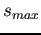

Siguiente: Erosión y dilatación Subir: Detección de la región Anterior: Diferencia absoluta entre el Índice General
A pesar de haber eliminado gran parte del ruido en la imagen, en la práctica se dan casos en los que puntos aislados continúan apareciendo en la imagen. Variar el lÃmite () establecido para la umbralización no brinda una solución a este problema, ya que al aumentar se elimina información importante y al disminuirlo, aumenta la información espuria. Es por esto que fue necesario proponer dos procesos que se mencionan a continuación.